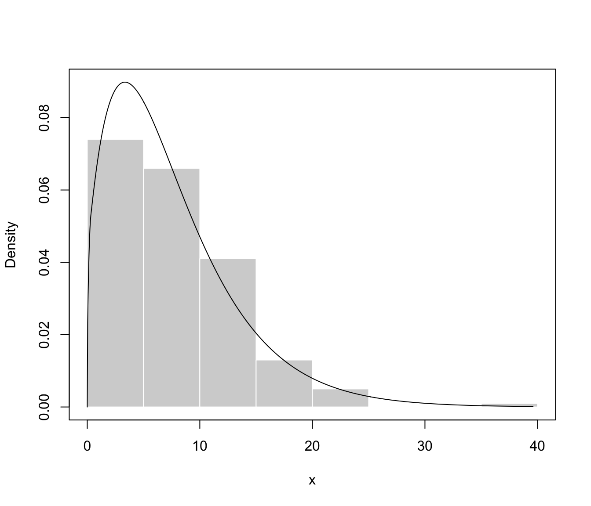
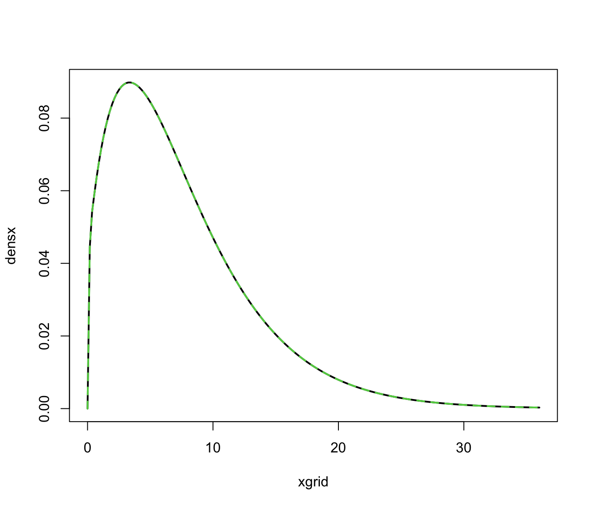

Model-based mixture density estimation for bounded data
predict.densityMclustBounded.RdCompute density estimation for univariate and multivariate bounded data based on Gaussian finite mixture models estimated by densityMclustBounded.
Arguments
- object
An object of class
"densityMclustBounded"resulting from a call todensityMclustBounded.- newdata
A numeric vector, matrix, or data frame of observations. If missing the density is computed for the input data obtained from the call to
densityMclustBounded.- what
A character string specifying what to retrieve:
"dens"returns a vector of values for the mixture density;"cdens"returns a matrix of component densities for each mixture component (along the columns);"z"returns a matrix of component posterior probabilities.- logarithm
A logical value indicating whether or not the logarithm of the densities/probabilities should be returned.
- ...
Further arguments passed to or from other methods.
Value
Returns a vector or a matrix of values evaluated at newdata depending on the argument what (see above).
See also
References
Scrucca L. (2019) A transformation-based approach to Gaussian mixture density estimation for bounded data. Biometrical Journal, 61:4, 873–888. https://doi.org/10.1002/bimj.201800174
Examples
# \donttest{
y <- sample(0:1, size = 200, replace = TRUE, prob = c(0.6, 0.4))
x <- y*rchisq(200, 3) + (1-y)*rchisq(200, 10)
dens <- densityMclustBounded(x, lbound = 0)
summary(dens)
#> ── Density estimation for bounded data via GMMs ───────────
#>
#> Boundaries: x
#> lower 0
#> upper Inf
#>
#> Model E (univariate, equal variance) model with 2 components
#> on the transformation scale:
#>
#> log-likelihood n df BIC ICL
#> -575.9403 200 5 -1178.372 -1227.465
#>
#> x
#> Range-power transformation: 0.4683665
plot(dens, what = "density", data = x, breaks = 11)

xgrid <- seq(0, max(x), length = 201)
densx <- predict(dens, newdata = xgrid, what = "dens")
cdensx <- predict(dens, newdata = xgrid, what = "cdens")
cdensx <- sweep(cdensx, MARGIN = 2, FUN = "*", dens$parameters$pro)
plot(xgrid, densx, type = "l", lwd = 2)
matplot(xgrid, cdensx, type = "l", col = 3:4, lty = 2:3, lwd = 2, add = TRUE)

z <- predict(dens, newdata = xgrid, what = "z")
matplot(xgrid, z, col = 3:4, lty = 2:3, lwd = 2, ylab = "Posterior probabilities")
 # }
# }